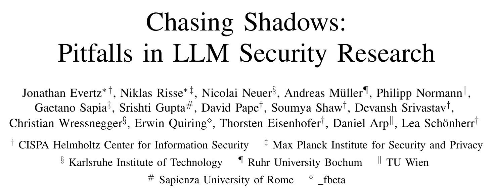
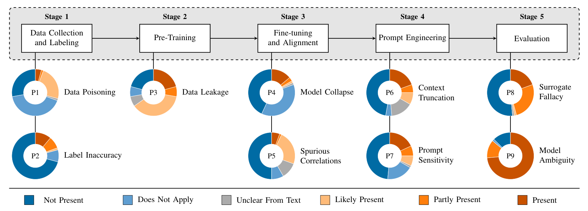
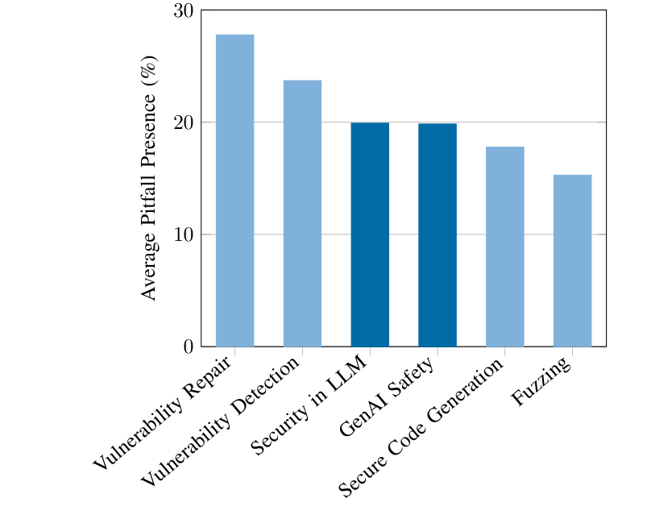
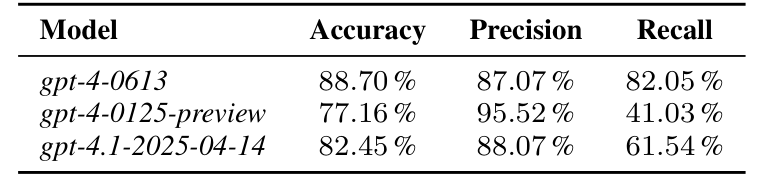

本文看点
01
72篇顶会论文篇篇踩坑
02
9个方法论陷阱普查
03
仅15.7%被作者察觉
01
PAPER INFO
论文信息
【论文题目】Chasing Shadows: Pitfalls in LLM Security Research
【论文链接】https://arxiv.org/abs/2512.09549
【项目主页】https://llmpitfalls.org
【作者团队】CISPA、马普所（MPI-SP）、卡尔斯鲁厄理工（KIT）等

— 论文题头
这是一篇发表在 NDSS 2026 的实证研究，来自 CISPA、马普所等一众欧洲安全强校（论文还拿了 Artifact Evaluated 全部徽章）。它做的事很特别，也很勇敢：不是提出新方法，而是给"用大模型做安全研究"这件事本身做了一次方法论体检。因为是实证研究，本文写得更深入一些。
02
OVERVIEW
导读
这两年用 LLM 做安全研究（漏洞检测、漏洞修复、安全代码生成、越狱攻防）井喷式增长。但一个尴尬的问题被集体忽略了：这些研究的方法本身，靠谱吗？ 传统机器学习早有人总结过研究陷阱，可 LLM 带来了一批全新的坑（数据投毒、合成数据导致的模型崩溃、模型版本歧义等），此前没人系统查过。
这篇论文就来补这一课。作者把 LLM 的研发流程拆成五个阶段，梳理出 9 个方法论陷阱，然后组织 15 位研究者，逐条核查了 2023 到 2024 年发表在安全和软件工程顶会（S&P、NDSS、CCS、USENIX Security、ICSE、ISSTA、FSE、ASE）上的 72 篇 LLM 安全论文。结论令人不安：每一篇论文都至少踩了一个坑，而所有被踩的坑里，只有 15.7% 被作者自己意识到并讨论过，剩下八成多，作者根本没察觉。
03
PIPELINE
九个陷阱，藏在 LLM 流程的每一段
先看这张全景图，它把 9 个陷阱按 LLM 流程的五个阶段一一归位：

— 图1：LLM 流程的五个阶段与对应的 9 个方法论陷阱，每个陷阱旁的圆环代表它在 72 篇论文里的普遍程度（深蓝=不存在，橙色系=不同程度地存在）。数据采集阶段：P1 数据投毒、P2 标注不准；预训练阶段：P3 数据泄露；微调对齐阶段：P4 模型崩溃、P5 伪相关；提示工程阶段：P6 上下文截断、P7 提示敏感；评估阶段：P8 替身谬误、P9 模型歧义
挑几个最反直觉的解释一下：
- P3 数据泄露：大模型的训练数据是保密的，你拿来做评测的那个公开漏洞数据集，很可能早就被它"背"进训练集里了，于是你测出来的高分是"背答案"背出来的。
- P8 替身谬误（Surrogate Fallacy）：在某个具体模型上得出的结论，被想当然地推广到"所有大模型"，可不同模型行为差异极大，结论根本不通用。
- P9 模型歧义（Model Ambiguity）：论文只写"我们用了 GPT-4"，但 GPT-4 背后有无数个快照版本、还有不同量化精度，别人根本没法复现你到底用的哪一个。
- P4 模型崩溃：拿别的大模型生成的合成数据来训练，会一代代退化，越训越不稳定。
04
METHOD
怎么查的：15 个人，逐篇盲评
这套核查很讲方法。作者先写了一份详细的标注指南，每个陷阱都定义清楚"什么算存在、什么算不适用、什么算证据不足"；每篇论文由 2 位评审独立盲评，分歧再通过讨论、必要时升级到大组来裁定；15 位评审在 648 个判定（72 篇 × 9 个陷阱）里，只有不到 5% 需要开会裁决，评审间一致性（Fleiss' kappa）为 0.55。换句话说，这不是拍脑袋扣帽子，而是一份下了功夫、可复核的普查。作者也特别强调：目的不是指责谁，很多坑是精心做的研究也难免踩的，重点是让整个领域意识到它们的存在。
05
FINDINGS
篇篇踩坑，而且大多没被察觉
普查结果有几个数字值得记住。
其一，覆盖面惊人。 最普遍的陷阱是 P9 模型歧义，73.6%（53 篇）的论文都有，却没有一篇讨论过；其次是 P3 数据泄露 65.2%、P8 替身谬误 47.2%。这些都是能直接动摇结论可信度的坑。
其二，最扎心的是"没被察觉"。 模型崩溃（P4）、数据投毒（P1）、模型歧义（P9）这三个陷阱，在全部 72 篇论文里从头到尾没有一篇讨论过。一个坑如果没人意识到，就永远不会被修。
其三，不同研究方向踩坑程度差很多。

— 图2：六个研究方向的平均陷阱出现率。漏洞修复最高（27.78%）、漏洞检测次之（23.70%），而模糊测试最低（15.28%）、安全代码生成较低（17.78%）
规律是：越依赖大模型去"理解和判断"代码语义的方向（漏洞修复、漏洞检测），踩坑越多；而模糊测试这类把大模型当辅助、结论最终靠实际运行来验证的方向，踩坑最少。这其实指了一条路：让结论有一个不依赖大模型的"硬验证"出口，能大幅降低方法论风险。
06
IMPACT
这些坑到底有多坑：四个实验坐实危害
普遍存在还不够说明问题，作者又做了四个案例实验，证明这些坑真的会扭曲结论。最直观的是模型歧义（P9）这个例子：同一个仇恨言论检测任务，只是换了 OpenAI 的不同 GPT 快照，结果天差地别。

— 表1：同一个仇恨检测任务在三个 GPT 快照上的表现。gpt-4-0613 召回率 82.05%，而 gpt-4-0125-preview 召回率只有 41.03%，同一个"GPT-4"，召回率差了一倍
同样是"GPT-4"，同样一套实验，只是换了个快照版本，召回率就从 82% 掉到 41%。如果一篇论文只写"我们用了 GPT-4"，那它的结论根本无从复现，甚至可能因为选了个"碰巧表现好"的版本而虚高。作者还发现量化精度也会显著改变结果（2-bit、3-bit 的模型反而更容易被攻击成功）。
另外三个实验同样有力：数据泄露方面，把 20% 的测试数据泄进微调集，F1 就能凭空涨 0.08 到 0.11，且随泄露比例近乎线性上升（不过作者也诚实地指出，他们没在商用大模型里找到记住 PrimeVul 数据的证据，这点是个让人稍稍安心的意外）；上下文截断方面，在漏洞检测数据集里，平均 52.8% 的漏洞函数超过 512 token，直接被截断，模型可能根本没读到那段有漏洞的代码，就被要求判断它有没有漏洞；模型崩溃方面，用合成代码反复自训练十代，困惑度一代代升高，模型越来越不稳定。
07
TAKEAWAYS
启发与点评
对研究者：这篇的价值不在于某个新算法，而在于它给整个领域立了一面镜子，还给出了可操作的体检清单。它最狠的一个观察是"存在"与"被讨论"之间的巨大落差：73.6% 的论文有模型歧义，却零讨论。这说明问题不是大家做不到，而是根本没意识到。它给出的改进其实都不难：写清楚你到底用的哪个模型快照、什么量化精度；用了合成数据或大模型打标就披露出来、抽样人工核验；检查测试数据是否可能在模型训练截止日之前就公开了；别把单个模型的结论推广到所有模型。这些不是高深技术，而是把方法论的严谨当成一等公民。对任何在做 LLM 安全研究的人，llmpitfalls.org 这份持续更新的清单值得对照自查一遍。
对从业者与读者：一个直接的判断，读 LLM 安全论文时要多留个心眼。当你看到一篇论文报告某个大模型在漏洞检测上"准确率 90%+"，先别急着信，问几个问题：它用的是哪个模型快照？测试集会不会早被模型背过？漏洞代码有没有超出上下文被截断？结论是不是只在这一个模型上成立？这篇论文相当于给你了一副"照妖镜"，能帮你快速识别一个亮眼结论背后有没有方法论的水分。
一点观察：我们这个号解读过大量 LLM 安全论文，这篇读下来格外有触动，因为它照的正是我们天天在读的这类研究。它提醒了一件容易被热度掩盖的事：在一个爆发式增长的领域里，最稀缺的往往不是新方法，而是对方法本身的诚实和怀疑。软件供应链安全里我们反复强调"信任要有依据"，而这篇把同样的要求指向了研究本身，一个用来发现漏洞的工具，如果它自己的评测就站不住脚，那基于它的所有安全结论都是在流沙上盖楼。从"追逐幻影"回到扎实的证据，是这个领域走向成熟绕不开的一步。